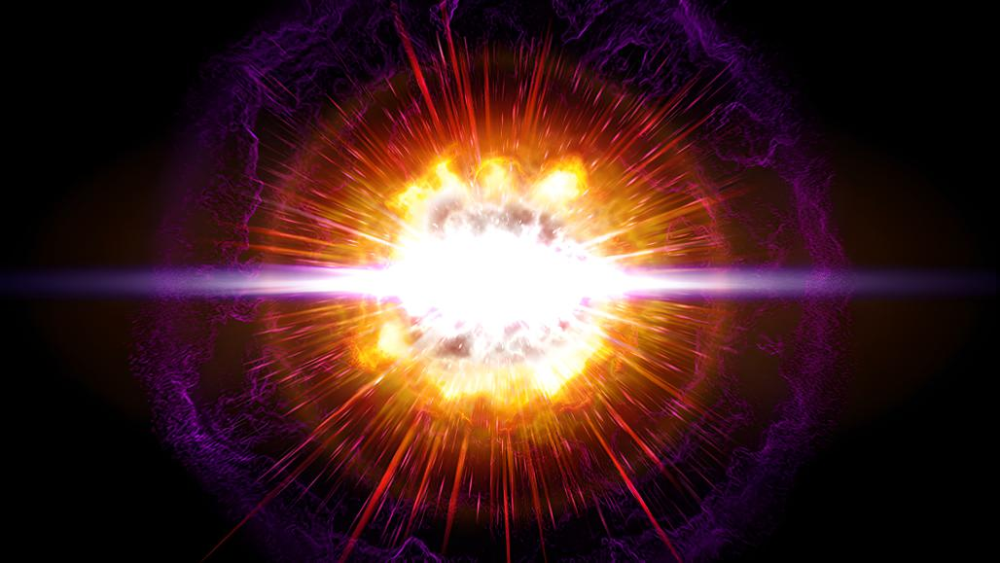
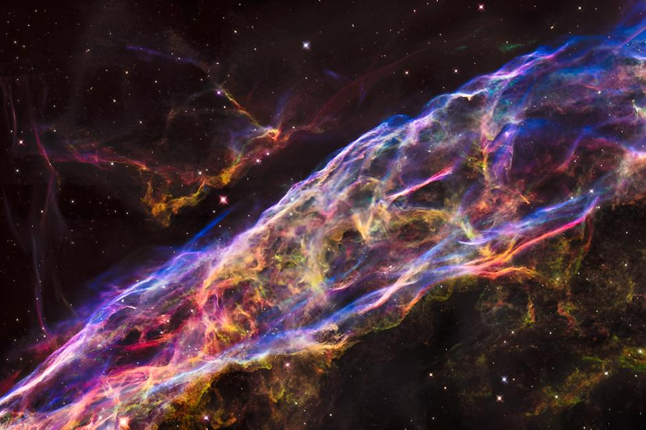

|
|---|
| 
|
超新星爆发是某些恒星在演化接近末期时经历的一种剧烈爆炸。这种爆炸都极其明亮，过程中所突发的电磁辐射经常能够照亮其所在的整个星系，并可持续几周至几个月才会逐渐衰减变为不可见。在这段期间内一颗超新星所辐射的能量可以与太阳在其一生中辐射能量的总和相媲美。恒星通过爆炸会将其大部分甚至几乎所有物质以可高至十分之一光速的速度向外抛散 ，并向周围的星际物质辐射激波 。这种激波会导致形成一个膨胀的气体和尘埃构成的壳状结构，这被称作超新星遗迹。超新星是星系引力波潜在的强大来源 。初级宇宙射线有很大的比例来自超新星 。 超新星比新星更有活力。超新星的英文名称 supernova，nova在拉丁语中是“新”的意思，这表示它在天球上看上去是一颗新出现的亮星（其实原本即已存在，因亮度增加而被认为是新出现的）字首的super-是为了将超新星和一般的新星有所区分，也表示了超新星具有更高的亮度。
|
|---|---|
|  | 超新星可以用两种方式之一触发：突然重新点燃核聚变之火的简并恒星，或是大质量恒星核心的引力塌陷。在第一种情况，一颗简并的白矮星可以通过吸积从伴星那儿累积到足够的质量，或是吸积或是合并，提高核心的温度，点燃碳融合，并触发失控的核聚变，将恒星完全摧毁。在第二种情况，大质量恒星的核心可能遭受突然的引力坍缩，释放引力势能，可以创建一次超新星爆炸。 185年12月7日，东汉中平二年乙丑，中国天文学家观测到超新星185，这是人类历史上发现的第一颗超新星。 该超新星在夜空中照耀了八个月。《后汉书·天文志》载：“中平二年（185年）十月癸亥，客星出南门中，大如半筵，五色喜怒，稍小，至后年六月消”。 1006年4月30日：位于豺狼座的SN 1006爆发，它可能是有史以来人们记录到的视亮度最高的超新星，据推断其亮度达到了-9等。据现代天文学家推测：“在1006年的春天，人们甚至有可能能够借助它的光芒在半夜阅读。”在《宋史·天文志》卷五六中记载为：“景德三年四月戊寅，周伯星见，出氐南，骑官西一度，状如半月，有芒角，煌煌然可以鉴物，历库楼东。八月，随天轮入浊。十一月复见在氐。自是，常以十一月辰见东方，八月西南入浊。” |